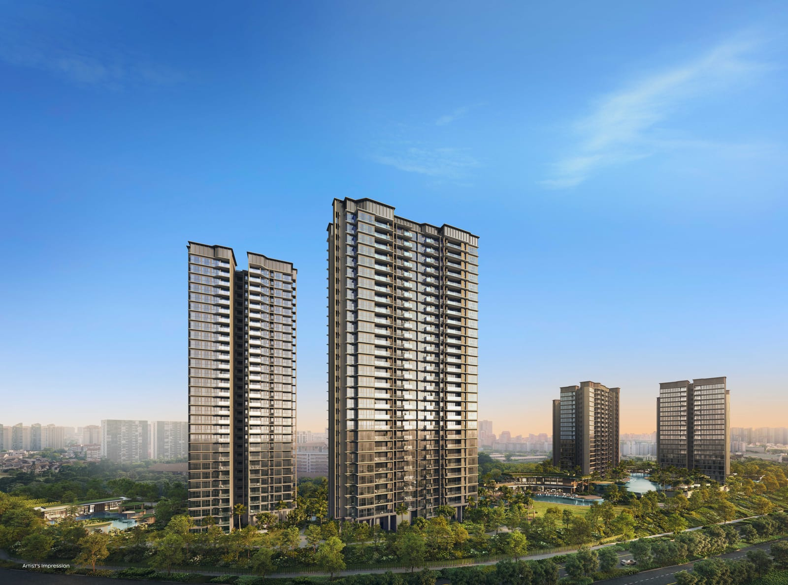

A ~6 minute read for buyers weighing up the biggest District 20 launch of the cycle before the showflat marketing takes over.
Thomson Reserve is the 1,240-unit, 99-year leasehold redevelopment of the former Thomson View — jointly developed by UOL Group, Singapore Land Group and CapitaLand Development. It’s a 3-minute walk to Upper Thomson MRT (TE8), within the 1 km Ai Tong School catchment, and 3 minutes from Thomson Plaza. On the NAVIS PrimeKey Analysis it scores 33 / 40 (82.5%) — 4.1 out of 5 stars: five-star marks on connectivity, project size, school effect and tenure, with four-star yield (~3.17–3.20%) and growth hotspot exposure. The only weak spots: a thin GLS pipeline (one confirmed plot within 2 km) and a moderate — not overwhelming — MOP upgrader pool. Verdict: Strong Buy for long-term capital-growth and family buyers who value liquidity, school catchment and stability over short-term speculative upside. Preview slated Sep / Oct 2026.
Every few years, a single launch defines the cycle for its district. In District 20, Thomson Reserve — the redevelopment of the former Thomson View — is that launch.
It’s the rare combination buyers spend years looking for: a mega-development of ~1,240 units, on a fresh 99-year lease, built by a three-way consortium of UOL Group, Singapore Land Group and CapitaLand Development, three minutes from a Thomson-East Coast Line station, and inside the 1 km catchment of Ai Tong School. On paper, almost everything aligns.
So the more useful question isn’t whether Thomson Reserve looks good in a brochure. It’s whether the underlying data justifies the headline price — and whether the few weaker pillars matter for your buyer profile. Below we run the project through the NAVIS PrimeKey Analysis — the same 8-pillar framework we use to grade any Singapore new launch on data, not on hype.
Quick project facts
- Developers: UOL Group × Singapore Land Group (SingLand) × CapitaLand Development
- Site: Former Thomson View (en-bloc redevelopment)
- Tenure: 99-year leasehold — ~98 years remaining (from Nov 2025)
- Total units: approx. 1,240 (mega-scale)
- Unit mix: 1-bedroom (~506 sqft) through to 5-bedroom (~1,679 sqft)
- District: D20 — Upper Thomson / Bishan
- Nearest MRT: Upper Thomson MRT (TE8) — approx. 261–407 m, ~3-min walk
- Schools (1 km): Ai Tong School (~4-min walk); Catholic High School and Raffles Institution nearby
- Indicative pricing: 1-bedroom from approx. $1.38 m; expected average $2,717–$2,860 psf (developer breakeven estimated ~$2,143 psf)
- Preview window: Sep / Oct 2026 (target)
The 5 selling angles you’ll hear
1. The Ai Tong moat. A 1 km catchment to a top-tier primary school is the single most durable demand driver in Singapore property. Ai Tong School consistently sits at the top of P1 registration competition, and a 4-minute walk puts Thomson Reserve squarely in the “just register, you’re already in” zone. Catholic High and Raffles Institution further widen the family-buyer base.
2. Three minutes to the TEL. An MRT walk this short is rare for a project of this scale. Upper Thomson MRT (TE8) is 5 stops to Orchard, 9 stops to the CBD — effectively unlocking the entire central spine without a car. For drivers, the CTE is on the doorstep, and the upcoming North-South Corridor (express bus lanes plus a 5 km cycling/wellness corridor) layers in a second north-south express artery.
3. The mega-development advantage. 1,240 units is in the top decile of project sizes launching in this cycle. That delivers three real benefits: economies of scale on maintenance fees, a wider facilities slate (typically 50+ amenities at this size), and crucially, resale liquidity. Larger projects transact more frequently — which keeps bank valuations clean for refinancing and gives owners a faster, tighter exit when they need it.
4. Triple-name developer pedigree. A UOL × SingLand × CapitaLand consortium is as close as Singapore residential gets to a blue-chip developer signature. Build quality, master-planning, and post-handover defect response are typically materially better than mid-tier developers — and the resale premium attached to that pedigree tends to compound over the first decade.
5. Nature, plaza, reservoir — all within walking distance. Thomson Plaza (supermarkets, F&B, dailies) is a 3-minute walk away. MacRitchie Reservoir Park, Windsor Nature Park and Lower Peirce Reservoir are minutes by car. For owner-occupiers, this is one of the rare neighbourhoods where you can have both 24/7 retail convenience and genuine forest within ten minutes — without sacrificing the MRT walk.
The honest review — NAVIS PrimeKey Analysis
Selling angles are useful only insofar as they map to real performance drivers. The PrimeKey Analysis grades a project across the eight pillars that historically matter most — connectivity, growth hotspots, GLS pipeline, project size, remaining tenure, rental yield, school catchment, and upgrader (MOP) demand — and rolls them into a single Investability Score.
Where Thomson Reserve shines
- MRT connectivity (5★). A 3-minute walk to a TEL station is best-in-class. It widens the tenant pool, tightens resale spreads, and remains a permanent locked-in advantage — the station isn’t going anywhere.
- Remaining tenure (5★). ~98 years remaining gives a clean 20-year-plus exit window with zero lease-decay drag and maximum LTV eligibility.
- Project size (5★). 1,240 units delivers facilities depth, maintenance-fee efficiency, and the resale liquidity that smaller boutique launches simply can’t match.
- School effect (5★). Ai Tong within 1 km is an evergreen demand floor — it cycles with the school calendar, not the property cycle.
- Rental yield (4★). Projected ~3.17–3.20% gross yield sits in the upper quartile for the RCR. Solid cash-flow cover for investors, especially given the MRT walk.
- Growth hotspot (4★). Not inside the Upper Thomson Growth Hotspot, but 875 m from the boundary — close enough to inherit the infrastructure spillover, far enough to avoid hotspot pricing volatility.
Where it doesn’t
- GLS / en-bloc pipeline (2★). Only one confirmed GLS plot within a 2 km radius (Lorong Puntong). Less land-price uplift from future bids than, say, the Holland/Bukit Timah corridor — but the flip side is supply discipline. Limited new launches in the immediate vicinity protects pricing stability for Thomson Reserve owners.
- MOP / upgrader cluster (3★). Approximately 1,253 HDB / BTO units (including Kebun Baru Edge and Ang Mo Kio Court) reach MOP within 10 years. That’s a steady, consistent walk-in upgrader demand pool — but not the “tidal wave” you see in younger BTO-heavy districts.
Pricing & unit mix — what to expect
Thomson Reserve will run the full size spectrum, from compact 1-bedroom layouts (~506 sqft) through to multi-generational 5-bedroom units (~1,679 sqft). That breadth is by design: a mega-development needs to absorb demand from young professionals, owner-occupier families, and yield-focused investors in roughly the same launch window.
The early guide pricing puts a 1-bedroom from approximately $1.38 million. For benchmark context, the developer’s estimated breakeven is around $2,143 psf, with expected average selling prices in the $2,717–$2,860 psf band — a typical 25–30% gross developer margin for a launch of this scale and pedigree. The preview is targeted for September / October 2026, so the final unit-by-unit price list will land closer to then.
Read the full PrimeKey Report
The summary above is the editorial cut. The full NAVIS PrimeKey Analysis Report for Thomson Reserve walks through each of the 8 pillars with the underlying data, 2 km map overlays, comparable RCR launches, and the rental yield workings behind the 3.17–3.20% projection.
Thomson Reserve — NAVIS PrimeKey Analysis
Full 8-pillar scoring, GLS & MOP map, comparables & rental yield workings. No email gate.
Who is Thomson Reserve actually for?
Strip away the launch noise and the buyer profile is unusually clean:
- Families with school priorities who want a fresh 99-year lease, MRT-walkable, inside the Ai Tong 1 km catchment.
- Long-horizon capital growth buyers who value liquidity (1,240 units) and pedigree (UOL/SingLand/CapitaLand) over short-term flip potential.
- RCR yield investors looking for a 3%+ projected gross yield with strong tenant filterability (TEL + Ai Tong + Thomson Plaza all within walking distance).
- Owner-occupiers who want central-spine access without surrendering nature, plaza convenience or low-density surroundings.
It’s a weaker fit if your underwriting depends on massive nearby GLS bidding to lift comparables, or if you need an explosive BTO MOP wave to drive a 5-year exit. Both are present here — just not at maximum intensity.
As always, the responsible next step is to see the data before you see the showflat. Read the PrimeKey Report above, line it up against any other RCR or D20 shortlist you’re considering, and decide on facts — not on the brochure’s rendering quality.
Want the e-brochure or a private preview?
Preview is targeted for Sep / Oct 2026. Drop your details below for the newest e-brochure, a showflat appointment, or both — and we’ll come back within one business day. Submissions go straight to our editorial inbox at projecthome.sg@gmail.com, not an autoresponder.
This article is for general informational and editorial purposes only and does not constitute legal, tax, financial, or investment advice. All figures — including unit count, projected yield, walking time, indicative pricing and PrimeKey scoring — reflect publicly available information at time of writing and are subject to change at the developer’s and authorities’ discretion. NAVIS PrimeKey Analysis is a proprietary research and shortlisting tool, not a valuation. Always verify against URA REALIS, the developer’s latest sales material, and consult licensed professionals before any property purchase decision. See our full disclaimer.